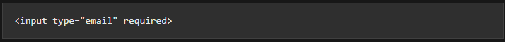
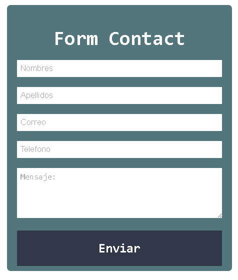

Practica No.2
Leccion 1 - Definicion de HTML
¿Que es HTML?
HTML5 es una combinación de nuevas etiquetas de markup lenguaje HTML, propiedades CSS3, JavaScript y algunas tecnologías
complementarias de apoyo, pero que técnicamente son independientes de la propia especificación HTML5. Por ello vamos a
distinguir entre la especificación HTML5 en sí y la familia HTML5
Podemos definir la especificación HTML5 como nuevos elementos de markup o sintaxis, utilizados por los diseñadores
para crear páginas web junto con las etiquetas utilizadas a día de hoy. Muchos de estos nuevos elementos ya son
conocidos para los diseñadores que trabajan con las etiquetas HTML tradicionales, como p, ul o div. Estas nuevas
etiquetas suponen para desarrolladores y diseñadores, unas herramientas más avanzadas y se traducen en mejores
experiencias para el usuario final.
Ademas de las distintas definiciones y capacidades de html como:
- HTML significa Hyper Text Markup Language que es Lenguaje de marcado de hiper texto.
- HTML es el lenguaje de marcado estándar para crear páginas Web.
- HTML describe la estructura de una página Web.
- HTML consta de una serie de elementos.
- Los elementos HTML indican al navegador cómo mostrar el contenido.
- Los elementos HTML etiquetan piezas de contenido como "esto es un encabezado", "esto es un párrafo", "esto es un enlace", etc.
Historia de HTML
HTML4, que se dio por cerrado en 1998, es el lenguaje de markup que conforma la base de la gran mayoría de las
páginas web que podemos ver a día de hoy. Los diseñadores y desarrolladores web han estado utilizando la especificación
HTML 4.01 durante bastantes años de manera satisfactoria, combinándola con CSS para la definición de estilos y con
JavaScript para añadir interactividad a los contenidos.
Tras la finalización de HTML 4.0.1, el W3C continuó sus trabajos en consonancia con la evolución de la web, y comenzó
con un lenguaje llamado XHTML 1.0. Existe una pequeña diferencia entre HTML 4.0.1 y XHTML 1.0 (XHTML es un lenguaje más
estricto: por ejemplo, todas las etiquetas deben indicarse en minúsculas). Uno de los objetivos de XHTML 1.0 era crear un
lenguaje de markup que pudiera extenderse y resolver las necesidades de las tecnologías futuras, por ejemplo para los
dispositivos móviles. Muchos sitios web se han creado utilizando XHTML 1.0 como marco de desarrollo y muchos diseñadores
y desarrolladores valoran positivamente sus reglas sintácticas más estrictas.
En paralelo a la adopción y difusión de XHTML 1.0, se empezó con el desarrollo de otro lenguaje, XHTML 2.0, que añadía una
serie de novedades de gran interés a las páginas web y que se apoyaba de forma notoria en XML. No obstante, este nuevo lenguaje
adolecía de diversos problemas de tipo técnico y no resolvía adecuadamente las necesidades reales de los desarrolladores.
En 2004, un grupo de representantes de los principales fabricantes de navegadores y un grupo de trabajo de desarrolladores web
formaron un grupo independiente llamado WHATWG (iniciales de Web Hypertext Application Technology Working Group). Su misión
consistía en crear una especificación de lenguaje HTML mejor, orientada a crear un nuevo tipo de aplicaciones web pero manteniendo
la compatibilidad con las versiones en activo de los navegadores existentes.
Durante unos dos años y medio el W3C y el grupo WHATWG trabajaron en paralelo y de manera independiente hasta que en 2006, Tim Berners-Lee,
creador de la World Wide Web y fundador del W3C anunció que el W3C y WHATWG trabajarían juntos en la elaboración del estándar.
Como resultado de todo ello, se abandonó el desarrollo de XHTML 2.0 y la especificación HTML 4.0 se reformó con el nombre HTML5.
No obstante, conviene recordar que HTML5 empezó siendo Web Applications 1.0, y eso nos da una pista muy clara para entender para
qué fue diseñado realmente HTML5.
Gracias a que el W3C tomó el liderazgo para el desarrollo de HTML5, ahora los desarrolladores tenemos la garantía de que HTML5 será realmente
un estándar gratuito y con las suficientes garantías de no incurrir en problemas de propiedad intelectual.
Ademas que desde los primeros días de la World Wide Web, ha habido muchas versiones de HTML en esta lista los ordenamos en orden cronologico a como fueron llegando:
¿De que es capaz HTML?
A día de hoy HTML no tiene capacidad para reproducir contenidos multimedia, como audio o vídeo, sin un complemento un "plug-in"
como los de Adobe, Flash, Microsoft o Silverlight. HTML tampoco tiene capacidad para almacenar datos en el ordenador del usuario,
esto se hace actualmente mediante un lenguaje de scripting o con alguna otra tecnología. No existe un formato de dibujo nativo en HTML.
Los gráficos y animaciones se ofrecen en estos momentos en forma de archivos de imágenes o con la ayuda de otros complementos
(Adobe Flash, Java, Microsoft Silverlight u otros). En general, cada vez más gente depende de la web y utiliza aplicaciones
web y las expectativas que se generan alrededor de lo que puede o podría hacer una página web van creciendo día tras día.
Esta demanda de los usuarios en favor de un mayor rendimiento y unos sitios web con prestaciones más avanzadas y completas se
ve limitada por el lenguaje HTML que se utiliza actualmente.
¿Que incorpora el lenguaje HTML5?
El lenguaje o markup HTML5 incorpora algunas etiquetas nuevas pensadas para hacer que la estructura de la página web sea más lógica y
funcional. Antes de HTML5, la estructura de una página dependía fuertemente de las etiquetas div, generalmente asociadas a una clase CSS
o un ID. Por ejemplo, en HTML 4.0 es una práctica comúnmente aceptada definir la cabecera de una página web de esta forma:
Caso 1:
En este caso, el código destacado en color rojo es el ID de CSS que sirve para definir la anchura y altura de la cabecera así como su color de fondo. En el código CSS podríamos tener algo así:
El ID utilizado header es arbitrario. Algunos diseñadores prefieren nombres como masthead, topsection, o box.Para el este primer caso se utilizo un selector (#header) que refiere a un atributo ID de CSS.
En la especificación HTML5 existe ya una etiqueta llamada header que viene a sustituir al elemento div de forma que la sintaxis es mucho más lógica y coherente:
Caso 2:

En este ejemplo ya podemos añadir directamente las propiedades de estilo (ancho, alto, color de fondo, etc.) en una regla para el nuevo elemento header de CSS:
Para este segundo caso se utilizo un selector (header) que es una novedad de HTML5 y nos permite aplicar un estilo al elemento directamente. HTML5 dispone de unos cuantos elementos nuevos aparte de éste, como footer, nav, section, aside, y article.Estos nombres se basan en los que se vienen utilizando habitualmente para distinguir secciones dentro de las páginas web que vemos a diario (div id="footer", div id="nav", etc.).
El oprincipal bjetivo de los nuevos elementos HTML5 no es otro que evitar una excesiva dependencia de las etiquetas div y sustituirlas por una estructura de página más consistente y legible.
Como puedes ver, HTML5 no sustituye ningún elemento de sintaxis de HTML; simplemente añade nuevos elementos de vocabulario a la lista existente. Dicho de otra forma, podemos seguir utilizando la etiqueta div, pero esta etiqueta ya no necesariamente tiene que ser la viga maestra que soporte el diseño visual de toda una página web.
Principales elementos de HTML5
Las principales especificaciónes de HTML5 incluyen etiquetas que nos permiten integrar contenidos multimedia sin necesidad de complementos de navegador. Las etiquetas video y audio sirven para integrar video y audio en las páginas web de la misma forma que actualmente se hace con los archivos de imagen utilizando la etiqueta img.
Video
Esta es la principal estructura necesaria para incorporar vídeo a una página web de manera sencilla, como sepuede ver en el siguiente ejemplo donde añadimos un archivo de vídeo:
Audio
Esta es la principal estructura necesaria para incorporar el contenido de audio a una página web es de manera sencilla, ademas que Insertar un archivo de audio mp3 en la página se hace de forma similar. En el caso del audio y el vídeo podemos añadirle también controles de reproducción y la posibilidad de precarga, utilizando los atributos controls, preload, y autobuffer: como podemos ver en el siguiente ejemplo donde añadimos un archivo de audio:
Como se ve en una pagina web al insertar audio y video:
Canvas
La etiqueta canvas dota al lenguaje HTML de un formato nativo para el dibujo y la animación. Esta etiqueta puede
servir, además, como plataforma alternativa para los gráficos y animaciones que a día de hoy podemos ver en películas
Flash. No obstante, existen inconvenientes de cierta consideración que es preciso resolver.
El elemento canvas funciona a modo de superficie de dibujo dentro de una página web (e ahí le viene el nombre. Dentro de esta superficie
de dibujo podemos crear formas con colores, gradientes y patrones de relleno. Podemos manipular los pixels de forma interactiva en
pantalla, mostrar textos y exportar los contenidos hacia archivos de imagen estática, como .PNG. Podemos también utilizar JavaScript o
las nuevas funciones de animación de CSS3 para que los objetos que creamos puedan moverse, desaparecer, cambiar de tamaño, etc. Incorporar
un elemento canvas a una página es muy sencillo:

Ejemplo de funcionalidad de canvas:
Formularios Web
Los nuevos elementos de formulario de HTML, cuando se implementen, harán que el trabajo con formularios sea más sencillo que ahora. Por ejemplo, muchos diseñadores web necesitan crear formularios en donde los datos tienen que comprobarse antes de enviarlos al servidor. Es casi obligado que el usuario, por ejemplo, tenga que escribir una dirección de correo electrónico en un campo de un formulario como por ejemplo podemos mencionar mediante este codigo

A día de hoy, para validar este dato se necesita programación en Javascript o cualquier otro lenguaje de scripting, pero HTML5 incorpora el atributo required a la lista de tipos de datos de entrada utilizables en formularios, como se muestra en este ejemplo:
Ejemplo de formulario:
Nuevos elementos de HTML5
Aparte de los nuevos elementos video, audio, canvas, y tipos de datos de formulario, hay otros nuevos elementos
dentro de HTML5 que podemos utilizar, como:
- figure y figurecaption: Que se emplean para etiquetar imágenes dentro de la página web
- hgroup:Que sirve para agrupar una serie de elementos de cabecera dentro de una sección lógica, etc.
API
Las APIs (Application Programming Interfaces o, en español, Interfaces de Programación de Aplicaciones o simplemente
"interfaces de programación") son una forma de crear aplicaciones utilizando componentes preconfigurados cuyo uso no se
restringe a la web, ni siquiera a los lenguajes de scripting.
Sitios web como Twitter o YouTube entre otros, ofrecen APIs al público de manera que los diseñadores y desarrolladores
pueden con ellas integrar algunas de sus funcionalidades dentro de sus propios sitios web (y también sirven para otros
fines, como por ejemplo para crear aplicaciones para teléfonos móviles o aplicaciones personalizadas para equipos de escritorio).
Uno de los objetivos principales de una API es el de normalizar el modo de trabajo de ciertos mecanismos y simplificar tareas
de programación, que de lo contrario, serían bastante complejas. Las APIs son un aspecto muy importante dentro del entorno de
HTML5 y hay una serie de ellas que conviene conocer, como Web Storage, Microdata o Geolocation, entre otras.
¿Cuales son algunos ejemplos de ATI?
API de geolocalización
Geolocation es una API que nos permite conocer el punto geográfico desde el cual se conecta el navegador a Internet. Esta información se emplea para enviar al usuario datos de interés para él, ajustados a su ubicación. Como ejemplo de su utilidad están las páginas web de búsqueda asociadas a un mapa en el cual nos indican dónde están situados ciertos comercios o restaurantes a una distancia concreta a pie desde el punto donde estamos en ese momento. En vez de tener que introducir a mano la dirección, un navegador habilitado para geolocalización nos puede devolver estos resultados de manera automática y transparente.
Web Workers
Web Workers es otra API que se suele considerar de la familia HTML5. Web Workers es un marco de programación que resuelve problemas de rendimiento de los navegadores. Al acceder a aplicaciones web avanzadas, como las de mapas o aquellas que generan gráficos o diagramas al entrar en la página web, se inician ciertas operaciones de computación que consumen una gran cantidad de recursos de procesador y que pueden reducir notablemente el rendimiento de la aplicación. Gran parte de la ralentización es debida a que se produce un conflicto a nivel de máquina entre las tareas interactivas de usuario (pulsación del ratón, arrastre, etc.) y la necesidad de la propia aplicación de acceder a recursos como datos, tarjeta gráfica u otros.
Almacenamiento Web
El Almacenamiento Web (Web Storage) es un ejemplo de uso de modelos preexistentes de tecnologías web bajo nuevas modalidades, más potentes. El Web Storage mejora el concepto de cookies del navegador. Actualmente las cookies permiten que los sitios web puedan guardar información en cantidades muy reducidas en los equipos de los usuarios, datos que normalmente sirven para volver a utilizarlos en momentos posteriores, y de esta manera, por ejemplo, ciertos sitios web recuerdan la información del usuario desde el último acceso.
Cookies
Las cookies son una tecnología bastante limitada y no resulta fácil su utilización por parte de los diseñadores web. Ahora, Web Storage actualiza este modelo para que las aplicaciones web puedan almacenar una cantidad de datos muy superior y que su acceso y utilización sea mucho más fácil y eficiente.
Ejemplo de Almacenamiento Web
Un ejemplo del uso de Web Storage puede ser la forma en que se almacenan datos en algunos teléfonos móviles. Los navegadores para smartphones, por ejemplo, pueden guardar datos en una sesión de navegador y permitir al usuario leerlos y/o modificarlos aunque no tengan conexión a la red.
La presencia de CSS en HTML5
Fondos
El fondo de un elemento CSS comprende el espacio desde los bordes hacia el interior de la caja del box model,
incluyendo el propio borde. Por tanto el fondo comprende el espacio de borde, el padding y el espacio del contenido.
El margin no se ve afectados por el fondo del elemento. Si el borde es opaco, el fondo quedará oculto por el borde.
En cambio si tiene transparencia o partes no opacas, dejará ver el fondo.
Para agregar una imagen de fondo en un elemento HTML, utilice el atributo HTML y la propiedad
CSS:stylebackground-image como en este ejemplo:
Bordes
La propiedad compuesta border permite establecer simultáneamente los cuatro bordes (arriba, derecha, abajo e izquierda) de un elemento, definiendo su color (nombre de color o código RGB o el valor transparent), grosor (valor absoluto de distancia, o los valores thin (fino), medium (medio) o thick (grueso)) estilo. Tambien lo podemos ejecutar de una forma mas simple como en el ejemplo siguiente:
Colores RGBa
RGBA son la siglas para red green blue alpha en español: alfa verde azul rojo. Suele describirse como un espacio de color, aunque en realidad es la combinación de un modelo de color RGB con un cuarto adicional denominado alpha channel en español: canal alfa. Ademas que estos colores RGBa los podemos seleccioanr de una forma mas facil en css como se muestra e el siguiente ejemplo:
Gradientes
CSS3 posee soporte para nuevos tipos de gradientes en las propiedades CSS. Usarlos en un segundo plano, permite mostrar transiciones suaves entre dos o más colores especificados, evitando así el uso de imágenes para estos efectos, lo que reduce el tiempo de descarga y el uso de ancho de banda. Además, debido a que el gradiente es generado por el navegador, los objetos degradados se ven mejor cuando se hace un acercamiento, y el ajuste de diseño es mucho más flexible.
Sombras
Se pueden usar las sombras utilizando la propiedad box-shadow para agregarle sombra a una caja y text-shadow para agregarle sombra al texto.
Ademas de las caracteristicas o propiedades que puede tener este comando como:
- Posición horizontal - un valor positivo ubica la sombra a la derecha de la caja mientras que uno negativo la ubica a la izquierda.
- Posición vertical - un valor positivo ubica la sombra debajo de la caja mientras que uno negativo la ubica encima de la caja.
- Difuminación - el radio de difuminación, entre mayor el número más borrosa va a ser la sombra.
- Propagación - el radio de propagación, un valor positivo incrementa el tamaño de la sombra mientras que uno negativo reduce el tamaño de la sombra.
- Color - por defecto utiliza el color de la fuente.
Esquinas o bordes redondeadas
Para crear bordes redondeados utiliza la propiedad border-radius. border-radius recibe un tamaño (puede ser en pixeles, rems, etc.) como valor.
Por ejemplo, para aplicar un borde redondeado con radio de 5px a un div con clase redondeado utilizarías la siguiente regla:
@font-face
Cada vez está más extendido el soporte para añadir tipos de letra especiales a las páginas web mediante la propiedad @font-face,
que permite especificar una fuente concreta y un enlace desde el cual el navegador pueda descargarla.
Esta característica puede cambiar de forma radical el aspecto de las páginas web, pero lamentablemente también se ve afectada por
los muchos problemas de compatibilidad con navegadores antiguos que se pueden ver en otras funcionalidades de HTML5.
Media Queries de CSS
En esencia se trata de lanzar una consulta al navegador para determinar el tipo de pantalla en el cual se va a restituir la página y, a partir de esta información, enviar un estilo específico, optimizado para esas dimensiones. Por ejemplo, la misma página web, en un monitor con 2.000 pixels de ancho podría mostrarse con cuatro o incluso cinco columnas, pero en pantallas de 320 pixels, podría enviar una plantilla de estilos que solo utilice una columna.

Animaciones con CSS

Ciertas tecnologías como Flash o Silverlight se han venido utilizando hasta ahora para animar objetos dentro de las páginas web. Ahora ya podemos conseguir algunos de estos efectos utilizando las reglas y propiedades de CSS3. En el futuro, el elemento Canvas de HTML5 y las transiciones de CSS3 permitirán crear elementos animados e interactivos sobre la página. Las animaciones de CSS, y el tema siguiente, las transiciones, probablemente estarán soportadas por la mayoría de los navegadores en los próximos años.
Transiciones de CSS
Las transiciones de CSS están muy relacionadas con el concepto de animación, pero son algo completamente distinto. Una transición permite variar el valor de una propiedad CSS de manera continua a lo largo de un intervalo de tiempo definido. Por ejemplo, un botón con un fondo de color verde puede cambiar de forma progresiva y suave a un color distinto cuando el usuario pasa el cursor sobre él.
¿Quienes utilizan HTML5 hoy en dia?
Existen numerosas demos de HTML5 que no se podrían poner en entornos en producción debido al distinto grado de
soporte que ofrecen los navegadores. Si decides incorporar funciones de estilo de CSS3, hay muchos sitios web
personales y de empresas que utilizan los elementos más vistosos, como border-radius o las funciones de transformación.
En estos casos, los diseñadores pueden utilizar las funcionalidades y añadir alternativas adicionales para asegurarse
de que la restitución de estas páginas en navegadores no compatibles no es demasiado diferente de cómo se ven en los
navegadores más modernos.
Un área donde el uso de las funcionalidades de HTML5 está siendo muy activo es entre los dispositivos móviles y smartphones.
En este mundo podemos encontrar aplicaciones web que aprovechan las ventajas de los nuevos tags de Video o Audio, puesto que
ciertos dispositivos como Windows Phone o iPhone soportan HTML5 pero no soportan complementos como Flash o Silverlight.
El futuro de HTML5
Futuras funciones y características
| Drag and Drop | Las operaciones Drag-and-Drop que es "arrastrar y soltar" y permiten al usuario mover en pantalla los elementos de forma visual en lugar de hacerlo pulsando botones. La API Drag and Drop de HTML5 se basa en la implementación original de Internet Explorer. Han cambiado algunos detalles y ciertos navegadores ofrecen una sintaxis diferente, pero ya está a punto de cerrarse una API normalizada. |
| La API File | La API llamada "File" o Archivo en español permite a los desarrolladores acceder a archivos del disco duro de la máquina cliente sin necesidad de instalar extensiones o complementos. Con este API, al fin podremos disponer de un modelo unificado de acceso mediante el cual las aplicaciones web podrán operar con archivos como por ejemplo para subirlos a un servidor. Pero por ejemplo una aplicación de edición de fotos basada en web, podría ofrecer el mismo modo de operación en todos los navegadores compatibles utilizando esta API. |
| Disposición de objetos en pantalla con Flexbox | CSS3 introduce una nueva forma de crear diseños para la distribución de los objetos en pantalla, llamado Flexible Box Layout "Flexbox". En este sistema se pueden crear disposiciones fluidas sin necesidad de acudir a las habituales directivas "float" y "clear" de CSS. Su objetivo es ofrecer herramientas más fiables y potentes a los diseñadores y desarrolladores para crear estructuras visuales complejas, válidas para la web y para dispositivos móviles. |
| Distribuciones en rejilla y columnas múltiples | También dentro de CSS, las definiciones de distribuciones en pantalla en formato de columnas múltiples y rejillas o "grids" son dos mejoras más orientadas a facilitar la presentación visual de las páginas web. La propiedad Multi-column de CSS nos permite distribuir un contenido puede ser un bloque de texto. El sistema de rejilla o Grid se relaciona de alguna forma con los Flexbox en el sentido de que esta funcionalidad está pensada para crear disposiciones en pantalla más complejas, tanto para las páginas web como para las aplicaciones. |
Conclusiones individuales
Emmanuel Enrique Larraga Bueno
En conclusion esta practica no.2 me ayudo a reforzar mas los conocimientos que tengo acerca de html y css en cuestion de sus componentes, usos, capacidades y futuras funcionalidades, asi como al mismo tiempo aprendi nuevas cosas como las formas de comando, sintaxis, nuevas funcionalidades , nuevos comandos, nuevas palabras claves y un mejor acomodo de informacion. Ademas de que aprendi mas acerca de las futuras funcionalidades, caracteristicas, historia y distintos complementos que podrian conseguir una mejora. Pero en si para mi html es de gran importancia hoy en dia en cuestion de la creacion de paginas web, ya sean paginas informativas, educativas, universidades, social, matematico, etc.
Alan Guillermo Ramos Zavala
Gracias al HTML5 ahora podemos tener mejores páginas que en anteriores ocasiones, este tipo de lenguaje ira cambiando conforme avance el tiempo para así facilitar a los usuarios el manejo y la visualización de las páginas que ellos visitan, también ayudara a los creadores de dichas páginas a realizar un trabajo más fácil y con mejores resultados, el cambio que más me gustó fue el de la multimedia en páginas ya que recuerdo que antes debías de descargar ciertas aplicaciones para poder ver videos o juegos por lo cual con estos cambios ya no es necesario. Otro que me pareció muy efectivo son las nuevas etiquetas, ya que quitaron algunas o las convirtieron en otras para así utilizar menos etiquetas al momento de realizar el código. De igual manera las nuevas etiquetas realizadas para la mejora visual de la página las cuales ayudarían a que el lector entienda de una mejor manera o sea más atractiva la página.
Adrian Fuentes Mendoza
En conclusión HTML 5 fue una gran actualización, trajo muchas mejoras, destacando en el uso visual, como lo que fueron el video y el canvas, junto con la compatibilidad de la nueva versión de CSS3 donde las animaciones y transiciones crean sin duda alguna una mejor experiencia en la página web, no dejando por fuera lo que es JavaScript para la funcionalidad de la misma, pero a fin de todo, cambio completamente la forma de estructurar la página web con las nuevas etiquetas, aunque gran parte de esto es para apoyar en el CSS, se logra apreciar con un mejor orden, como si ahora todo encuadrara, aunque lo más destacable son la agregación de las APIs, en especial la del rendimiento, ya que sin esta podría perjudicar mucho el rendimiento de una página web, creándola lenta y esto provocaría impaciencia en la mayoría de los usuarios para el consumo de esta página perdiendo usuarios, una gran idea para contrarrestar la gran carga que se añadió, sin duda aprendí como fue esta gran evolución de las páginas web con HTML 5.
Isaias Jair Solano Peral
Desde su creación, HTML se ha ido actualizando constantemente para adaptarse a las nuevas necesidades y la incorporación de nuevas tecnologías. HTML5 es el estándar actual del internet moderno. He aprendido HTML5 es una importante actualización del estándar de HTML, como tal trajo importantes cambios como la agregación de las etiquetas de estructura, independización de los plugin para el contenido multimedia, mejoras en los formularios, uso de las APIs de rendimiento, geolocalización y almacenamiento. Cambios necesarios para resolver algunos problemas y necesidades que se tenían. HTML5 También conllevo actualizaciones para CSS, que trajo mejores en animaciones. También fue importante saber que W3C y WHATWG son las organizaciones encargadas de establecer los estándares. Como estudiantes programadores la lectura de la lección fue benéfica y muy útil para conocer a fondo algunos detalles de HTML5. Puedo concluir que HML5 es una buena mejora del estándar de HTML.
Enrique Escobedo Adame
Sin HTML5 no existiría el Internet que hoy conocemos, si no se hubiera inventado, seguiríamos con el aburrido FTP (Protocolo de Transferencia de Ficheros) mandándonos o
bajando archivos que a veces ni sabíamos lo que eran, sin tener la posibilidad de visualizarlo antes. Ahora por medio de una página llena de colores y botones por la cual
se puede navegar, se puede tener acceso a bastante información y archivos. El lenguaje de HTML5 abrió una puerta al mundo permitiéndole a las personas expresar sus ideas
por medio de páginas y mostrárselas a todas las personas de todos los países.
CSS es la tecnología creada con el fin de separar la estructura de la presentación, y mejorar la usabilidad y experiencia de usuario de un sitio web, permitiendo el desarrollo web responsive
y disminuyendo el procesamiento y el tiempo de carga, factores que pueden marcar la diferencia entre triunfar o morir en el intento.